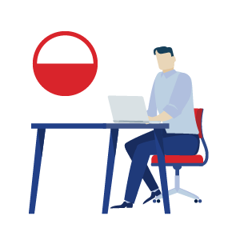

This project is mainly built for sharing articles/notes between people.
Users have chances to Add, Update and Delete operations.
In order to use "CemBYT", you have to Register to the system(if you don't have account yet).
CemBYT is a panel which supports session control, this means that you cannot use some functionalities without logging in.
For example, seeing control panel, adding/updating/deleting operations and controlling your articles.
IN THE LEFT SIDE, you will see
-CemBYT!
-About
-Articles
In CemBYT!, you may see the Introduction and the UML Diagram of the Project, also lovely PJATK logo :)
IN THE RIGHT SIDE, you will see
-Register Panel
-Login Panel
After logging in, when you click "Control Panel", you will see Share Article button, in this way, you will add a new article.
If you don't have any article yet, you will see "You don't have any article yet" message.
Creating Article:
- Title
- Content (Supported by CKEditor)
- Add Photo on Article
In Control Panel you may see your individual articles(In Form format):
(When you add a new Article you will see Article is successly added! message), you will see
-id
-Title
-Author
-Date
-Update Button(You can ONLY update your own Article)
-> Update Panel will be shown when you click.(Data will be persistent)
-Delete Button(You can ONLY delete your own Article)

All your articles will be published in "Articles", here is a place where all articles are put.
You may click "Continue Read" if you want to read all.
You may Search Articles on the top.
All articles list will be shown with title, author information and created date information.
You may click title of Article in order to see the details.
When you click an Article, you may also make a comment!
All articles will be sorted by newest from the system automatically.
Furthermore, Admin Panel is automatically created by Django Web Framework, operations also can be achieved by ../admin.
IF YOU ARE ADMIN...